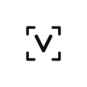
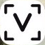
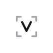

VoxFix 图标 · 尺寸修正与候选方案
桌面观感「太大」，根源不是画得大，而是自适应图标的渲染方式：Android 画布是 108dp，但启动器只取中心 66dp 铺满整个图标。原稿把图形按 108dp 全画布布置（外沿 57.2dp，占画布 53%），被系统裁切后实际显示为 86.6%，四周只剩 4.5% 留白——所以它比旁边任何图标都"顶"。
诊断
设计意图是克制的
设备实拍测得 86.4%，误差 0.2pp
四边留白各 11.5dp（17.4%）
改前 / 改后（按设备真实裁切渲染 · 64dp 桌面尺度）
留白 4.5%

留白 17.4%

只改一件事：整体收敛到 75.28%。构图、比例、圆头描边、笔画粗细比全部继承原稿，不做主观改动——框线 4.43→3.34、V 笔画 5.70→4.29，与原稿严格等比。
需要另一个数字就告诉我：62% 更克制，68% 更饱满。
四套候选

四套几何完全相同，只有底色与取景框灰度不同。B 的灰取景框约 38% 黑（#9CA1AA）：在 32dp 以下时 V 先被读到，取景框退为纹理。
尺寸档位（A · 收敛）
48dp 是桌面最常见的实际绘制尺寸：框线约 1.5px、V 笔画约 1.9px，仍能读出「取景框 + V」。低于 32dp 时取景框的四角会开始融成四个点——那是这套构图的下限，与原稿一致。
桌面场景（64dp）
输入法
输入法
几何规格（108dp 自适应画布）
全部取值由原稿等比换算（原框线 4.43、原 V 笔画 5.70、原外沿 57.16dp），没有新增任何主观数值。Android 交付沿用自适应图标：前景 vector + 纯色背景 + Android 13 单色层，minSdk 30 无需各密度 PNG。
结论
A 已落地。只改尺寸——问题只有「相对可见区画得太大」这一个，收敛即解决；换底色是另一件事，不该混在一起改。APK 已装机，真机桌面复核：图形居中、四边留白 17.4%，与同屏其他图标视觉重量齐平。
如果看图后觉得「还是有点重」，换 B——同样的几何，靠取景框降灰把视觉重心压到 V 上，是四套里最「轻」的白底方案。若嫌白底在深色壁纸上太亮，换 D。
换方案只动三个文件：ic_launcher_foreground.xml / ic_launcher_monochrome.xml 的描边色，ic_launcher_background.xml 的底色。尺寸数值四套通用。